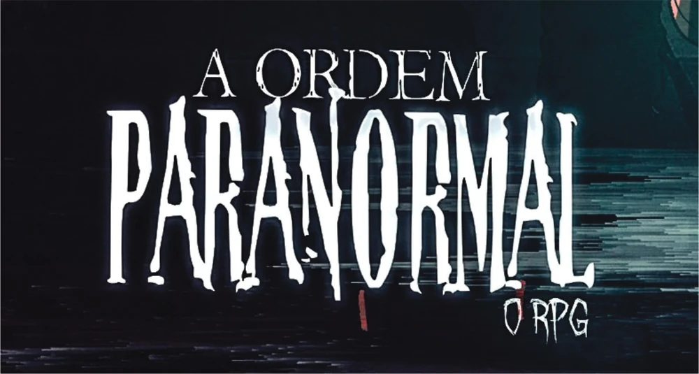
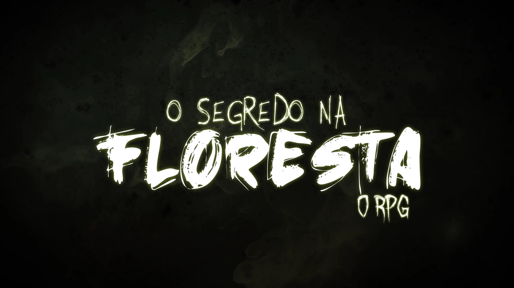
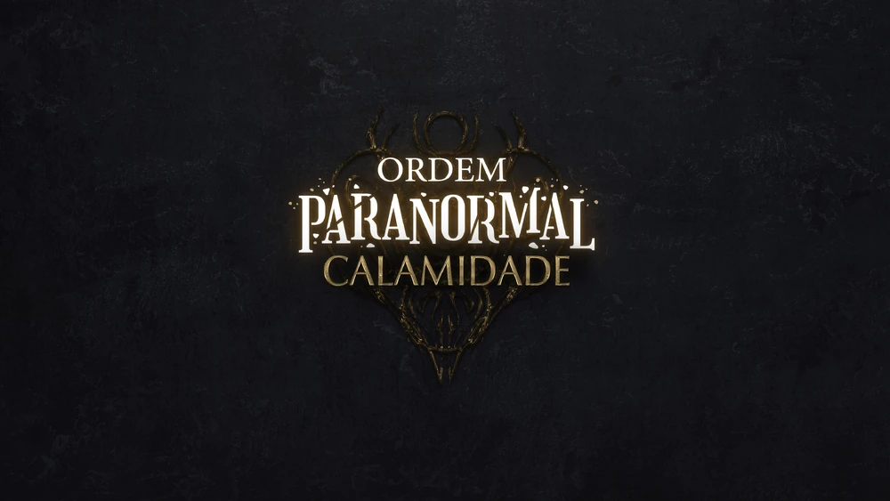

Ordem Paranormal (Temporada 1)

História
O universo de *A Ordem Paranormal* é dividido entre duas dimensões: o **Normal**, onde os humanos vivem, e o **Paranormal**, um lugar onde o impossível se torna real. Entre elas existe a **Membrana**, uma barreira que impede o contato entre os dois mundos.
Quando o medo do sobrenatural aumenta, a Membrana enfraquece, permitindo que criaturas e fenômenos paranormais invadam a realidade. Aproveitando isso, grupos chamados **Ocultistas** tentam destruir a Membrana para unir as duas dimensões e alcançar seus objetivos.
Para impedir essa ameaça, existe a **Ordo Realitas** (antigamente chamada Ordo Veritatis), uma organização secreta que combate atividades ocultistas e protege a humanidade do Paranormal.
A história começa em 29 de fevereiro de 2020, após um grito misterioso ser ouvido dentro da **Escola Nostradamus**, que havia sido destruída por um incêndio. A Ordo Realitas envia os agentes novatos **Elizabeth Webber**, **Thiago Fritz** e **Daniel Hartmann** para investigar o caso. Durante a investigação, **Alexsander Kothe** surge como suspeito por sua ligação com ocultistas, mas depois descobre-se que ele era, na verdade, vítima de um ritual que apagou suas memórias.
Elenco
N° de episódios
Exibição
Primeira exibição
Última exibição
segredo na Floresta (Temporada 2)

História
No dia 11 de abril, por volta das dez horas da manhã, uma Equipe da Ordem da Realidade (nessa época chamada de "Ordem da Verdade") tem uma reunião marcada com o homem conhecido como Senhor Veríssimo na grande torre comercial Alfa, na avenida Faria Lima, em São Paulo. O primeiro a chegar é Joui Jouki, que após procurar pela sala de reunião indicada por Senhor Veríssimo, se encontra com os outros membros de sua equipe: Cristopher Cohen, Cesar Oliveira, Thiago Fritz e Elizabeth Webber.
Todos partem até a sala de Veríssimo e lá ele os apresenta a Equipe Kelvin, uma equipe de agentes veteranos que foram enviados para uma cidade no interior do Rio Grande do Sul para investigar um estranho caso de assassinato envolvendo um símbolo ocultista e que acabou desaparecendo misteriosamente sem nenhum aviso prévio.
Após discutirem mais sobre a missão, todos se despedem de Veríssimo, se preparam e partem rapidamente até o aeroporto de São Paulo, indo em direção a cidade de Carpazinha com o objetivo de encontrar Miguel Cariad, Mariana Larona e Kenan Thomas.
Elenco
N° de episódios
Exibição
Primeira exibição
Última exibição
Desconjuração (Temporada 3)
História
O Santo Berço foi destruído. A reestruturada Ordo Realitas agora opera em uma base subterrânea na cidade de São Paulo. De lá, o homem conhecido como Senhor Veríssimo comanda uma legião de agentes que, com auxílio de métodos mais intensos, busca salvar o mundo da ameaça crescente do ocultismo.
Beatrice Portinari, uma florista com um passado misterioso, é a mais nova recruta da organização. Ela tem o auxílio dos novos colegas Erin Parker, uma animada engenheira especialista em explosivos, e Fernando Carvalho, um músico vivendo uma curiosa vida dupla, além dos veteranos Arthur Cervero, Joui Jouki e Kaiser. Dando uma nova formação para a equipe, eles recebem a missão de procurar e resgatar uma das mais importantes agentes da Ordem: Elizabeth Webber, que desapareceu enquanto investigava uma estranha ramificação ocultista, conhecida apenas como Ordem da Desconjuração.
Elenco
N° de episódios
Exibição
Primeira exibição
Última exibição
Calamidade (Temporada 4)

História
Dez meses se passaram após o retorno de Kian. Nenhum sinal de qualquer interferência no equilíbrio. Mas uma nova pista faz a Ordo Realitas começar a agir novamente. Um antigo caso de Arnaldo Fritz, relatando sobre uma entidade descrita como "O Diabo", reúne uma nova equipe de agentes, composta pelo pequeno e inteligente Rubens Naluti, o agente ex-aposentado Antônio Pontevedra, a promissora Carina Leone, filha do líder de uma máfia italiana de agentes paranormais, e os veteranos Arthur Cervero e Dante. Juntos, eles devem pesquisar mais a fundo sobre o caso enquanto continuam a busca pelo poder das Relíquias da Calamidade.
Em paralelo, Kian, junto de sua própria equipe de marcados, vai atrás das Relíquias da Calamidade, para conseguir completar seu plano de destruir o paranormal. O grupo é liderado por Gal, composto pelos irmãos Damir Lukic e Boris Lukic e pelos canibais Artemis Deordelin Rodrigues e Theodore Bagwell.